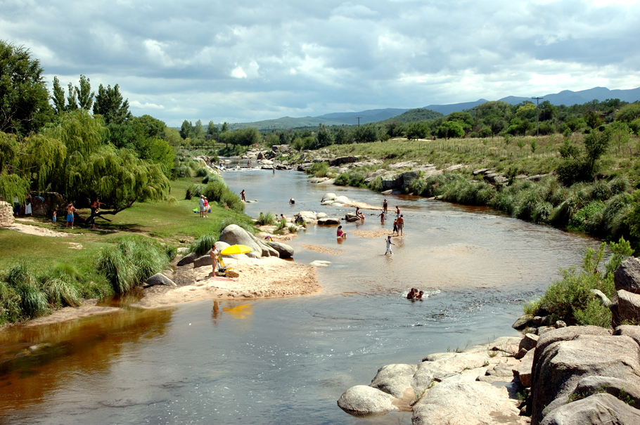
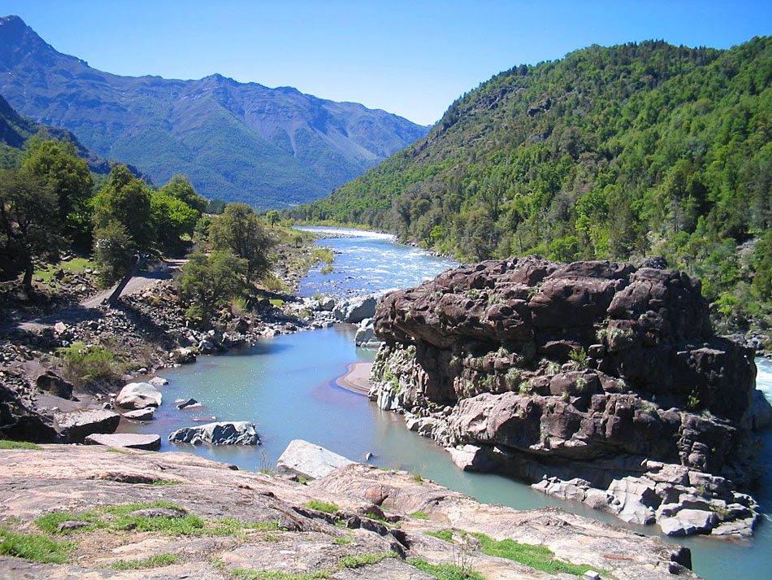
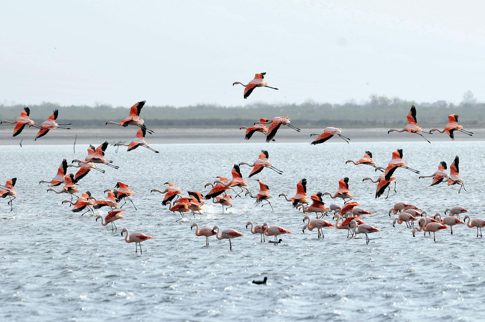

Traslasierra
El área de Traslasierra está ubicada al oeste de la ciudad de Córdoba, limitado por diversos cordones serranos. Partiendo desde Córdoba capital, a esta región se accede por el Camino de las Altas Cumbres, por la ruta nacional N° 20.
 Río de PanaholmaTraslasierra se destaca por sus particularidades naturales y por lograr una síntesis magistral entre el paisaje y el espíritu serrano. Tres embalses, un imponente cordón montañoso, volcanes, palmares, bosques y ríos, convierten a esta región en un destino ideal para el descanso y la recreación.
El área de Traslasierra se encuentra atravesada por numerosos ríos y arroyos, que se distinguen por sus aguas claras y su lecho arenoso, los cuales descienden desde las montañas, dando origen al Embalse La Viña. Este embalse se destaca por su muro de contención de 102 metros, que es el más alto del país y Latinoamérica. Allí se pueden practicar deportes náuticos como windsurf, kayak, canoismo, remo y pesca de pejerrey, entre otras especies. Durante el verano, el río Mina Clavero y el río Panaholma son los más visitados por los turistas, porque ofrecen hermosos balnearios y paradores.
En Traslasierra los turistas pueden disfrutar del contacto con la naturaleza, a través de la práctica de ecoturismo, recorriendo paisajes agrestes y rocosos. Aquí se encuentran tres de las áreas naturales protegidas más importantes de la provincia. El Parque Nacional Quebrada del Condorito, la Reserva Hídrica Pampa de Achala y la Reserva Natural Chancaní, en donde se realizan actividades al aire libre como observación de fauna, caminatas y cabalgatas.
A estas posibilidades se suma una atractiva ruta alimentaria, que ofrece a los visitantes recorridos por distintos establecimientos con el objetivo de conocer las tradiciones del pueblo cordobés a través de sabores y aromas. Además, Traslasierra propone un interesante circuito de Turismo Cultural y Religioso, que encuentra su epicentro en la localidad de Villa Cura Brochero, en donde desarrolló su obra cristiana el párroco José Gabriel del Rosario Brochero, más conocido como el “Cura Gaucho”. También en la localidad de Nono, los visitantes pueden conocer el museo polifacético Rocsen, que alberga más de 22.000 piezas vinculadas a las ciencias, el arte y la tecnología.
Punilla
Esta región está integrada por el área Punilla, ubicada al oeste de la ciudad de Córdoba, limitada por diversos cordones de las Sierras Grandes. Partiendo desde Córdoba capital, a esta área se accede por la ruta nacional 20 hasta empalmar con la Autopista Justiniano Allende Posse que nos conducirá a la ciudad de Villa Carlos Paz. Luego, debemos tomar la ruta nacional 38, para acceder al resto de las localidades de la región.
 Camino de PunillaEsta área está atravesada por numerosos ríos cristalinos, con hermosos balnearios, playas y paradores, los ríos San Antonio, Icho Cruz, Yuspe, Cosquín, Pinto y el río Ávalos, son los preferidos por los turistas durante el verano. A su vez, Punilla alberga cinco diques muy importantes: el Dique San Roque, El Cajón, el dique Los Alazanes, La Falda y San Jerónimo, en los cuales se puede pescar y practicar deportes náuticos a vela y a motor.
Próximo a la localidad de Capilla del Monte se encuentra el cerro Uritorco, ideal para realizar actividades de trekking y cabalgatas. Este cerro, además de su belleza natural, ha adquirido reconocimiento por las propiedades energéticas que se le atribuyen.
Otros lugares imperdibles de Punilla son el mirador de Cuchi Corral, próximo a la ciudad de La Cumbre, óptimo para la práctica de Parapente y Aladeltismo, el Parque autóctono Los Terrones, ubicado a 14 km. de la localidad de Capilla del Monte y la maravillosa Cueva de los Pajaritos, cercana a la localidad de Tanti.
Además esta área es sede de consagrados festivales y fiestas populares que se desarrollan a lo largo de todo el año. El más destacado es el “Festival Nacional de Folclore de Cosquín”, que se realiza en la tradicional Plaza Próspero Molina de la ciudad de Cosquín y dura 9 noches.
Mar Chiquita
La región de Mar Chiquita se encuentra ubicada al noreste de Córdoba capital, ocupando la zona de influencia de la Laguna Mar Chiquita. Partiendo desde la ciudad de Córdoba, a esta región se accede por ruta provincial 17.
 Flamencos bañandose dentro de la lagunaEl ecosistema propio de esta zona se distingue por la presencia de una variada y abundante flora y fauna autóctona, con más de 250 especies de aves. A la vera de la laguna, se pueden contemplar hermosos flamencos rosados, gaviotas, patos y otras especies de ambientes acuáticos. A esta propuesta de avistaje de aves, se suman otras alternativas igualmente interesantes como la pesca de pejerrey, deportes náuticos, excursiones guiadas, safaris fotográficos y paseos nocturnos.
Existen tres ríos que desembocan en la Laguna de Mar Chiquita: el Río Primero, el Segundo y el Río Dulce, en los cuales es posible pescar pejerreyes, bogas, carpas, mojarrones y tarariras, siempre y cuando se cuente con la carnada adecuada. Además, en los bañados del río dulce, se puede disfrutar de la pesca del Dorado, “el tigre de los ríos”.
La Laguna de Mar Chiquita, también invita a sus visitantes a disfrutar de actividades vinculadas al turismo salud, aprovechando las propiedades minerales del agua: fangoterapia, paseos anti stress y masajes relajantes, convierten s esta laguna un verdadero “spa”.